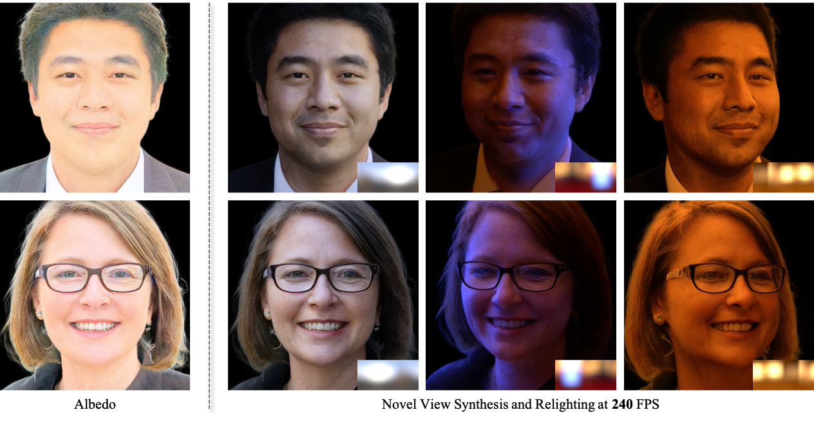

SIGGRAPH ASIA 202601
JointLight
Human-Centric Video Relighting with Asynchronous RGB-Irradiance Joint Modeling
Geometry-guided illumination control through joint generation of RGB and irradiance, with synthetic-to-real transfer.
Explore projectSELECTED RESEARCH PROJECTS
Exploring how light interacts with people and scenes — through controllable video relighting and generative 3D representations.
Human-Centric Video Relighting with Asynchronous RGB-Irradiance Joint Modeling
Geometry-guided illumination control through joint generation of RGB and irradiance, with synthetic-to-real transfer.
Explore project
Fast Relightability for 3D Gaussian Head Synthesis
Generative 3D Gaussian heads with efficient lighting control and novel-view synthesis under HDR environment maps.
Explore project